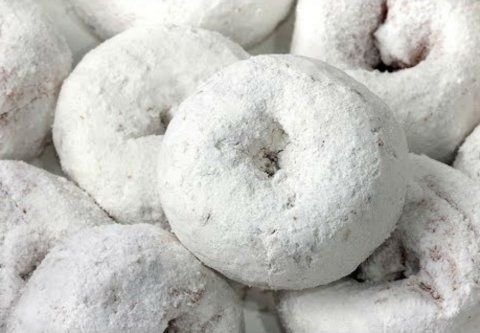

Sugared Donuts

How to Make Sugared Donuts
Turn refrigerated biscuits into delicious, sugary donuts.
INGREDIENTS:
- 1/2 cup white sugar
- 1/4 teaspoon ground cinnamon
- 10 ounce can refrigerated biscuit dough
- 3 tablespoons melted butter
How to Layer sugared donuts
- Toss together the sugar and cinnamon in a bowl, set aside. Cut each biscuit into thirds, and roll into balls. Skewer on a toasting fork, and cook over hot coals, turning constantly, until golden brown. Dip into melted butter, then roll in cinnamon sugar.